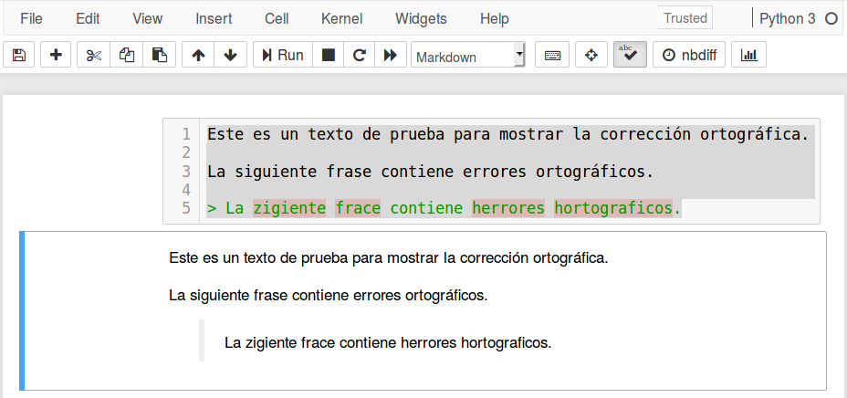

Revisión ortográfica en Jupyter Notebook
El objetivo de esta publicación es mostrar cómo tener revisión automática de ortografía en Jupyter Notebook, como se muestra a continuación.
Existen varias formas de realizar esto. Sin embargo, la forma más fácil es a través del complemento (nbextension) Spellchecker.
Paso a paso
Los pasos a seguir son los siguientes:
Instalar Jupyter notebook extensions (nbextensions). Este incluye Spellchecker.
Ubicar los diccionarios en la carpeta donde está el complemento. Los diccionarios deben usar la codificación UTF-8.
Configurar la ruta de los diccionarios. Esta puede ser una URL o una ruta relativa respecto a la carpeta en donde se encuentra el complemento.
A continuación describiremos en detalle cada paso.
Paso 1: Instalación de nbextensions
Existe una lista de complementos que agregan algunas funcionalidades comúnmente usadas a Jupyter notebook.
Escriba lo siguiente en una terminal, para instalarlo usando PIP.
Sin embargo, si se está usando Anaconda el método recomendado es usar
conda, como se muestra a continuación.
Esto debe instalar los complementos y también la interfaz de configuración. En el menú principal de Jupyter notebook aparecerá una nueva pestaña nombrada Nbextensions en donde se pueden elegir los complementos a usar. La apariencia es la siguiente.

Algunos complementos recomendados son:
Collapsible Headings: que permite ocultar secciones de los documentos.
RISE: que convierte los notebooks en presentaciones.
Paso 2: Diccionarios para español
La documentación de Spellchecker sugiere usar un script de Python para descargar diccionarios del proyecto Chromium. Sin embargo, estos tienen como codificación ISO-8859-1 (occidente) y falla para caracteres con tildes o virgulillas. Para que no haya problemas el diccionario debe tener codificación UTF-8. Pueden descargarse en este enlace.
Una vez que se tienen los diccionarios se deben ubicar en la ruta del complemento. En mi computador esta sería
y dentro de esta los ubicaremos en
Esta ubicación es arbitraria, lo importante es que necesitamos conocer la ruta relativa al complemento.
Paso 3: Configuración complementos
Ahora, en la pestaña Nbextensions seleccionamos el complemento y llenamos los campos con la información de nuestro diccionario:
language code to use with typo.js:
es_ESurl for the dictionary .dic file to use:
./typo/dictionaries/es_ES.dicurl for the dictionary .aff file to use:
./typo/dictionaries/es_ES.aff
Esto se muestra a continuación.

Otra opción es usar la URL para los archivos. En https://github.com/wooorm/dictionaries están disponibles los diccionarios del proyecto hunspell en UTF-8. En este caso, la configuración sería:
language code to use with typo.js:
es_ESurl for the dictionary .dic file to use:
https://raw.githubusercontent.com/wooorm/dictionaries/master/dictionaries/es/index.dicurl for the dictionary .aff file to use:
https://raw.githubusercontent.com/wooorm/dictionaries/master/dictionaries/es/index.aff
Y se muestra a continuación.


{kind=link}